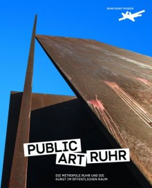
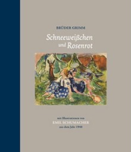

Graspin Color with your Hands
CONVERSATIONSEdited by: Werner Krüger
95 pages, hardcover with dust jacket, numbered and hand-signed by Emil Schumacher. English title and description for information purposes only, the book is only available in German. € 150,-
ISBN: 3-929769-44-1 – available at the museum gift shop or via info@esmh.de
This book was published in a limited, signed edition of 1,000 pieces. The pages are all illustrated with writings by Schumacher and signed by him in the back of the book.
The last copies of this book still in the possession of the Emil Schumacher Foundation are now available as part of the celebration of Emil Schumacher’s 100th birthday.

PublicArtRuhr
DIE METROPOLE RUHR UND DIE KUNST IM ÖFFENTLICHEN RAUMHG.: Walter Smerling, Ferdinand Ulrich i. A. der RuhrKunstMuseen
232 pages, 102 images in full colour, 24 x 29 cm, € 29,80.
ISBN 978-3-86832-134-0- available info@esmh.de

Emil Schumacher
FREI WIE EIN VOGEL Hg.: Ulrich Schumacher und Rouven Lotz
with essay by Rouven Lotz
72 pages, 66 images in full colour, Leinen-Einband , € 19,90.
ISBN: 978-3-86206-218-8- available in our museum store or info@esmh.de

Schneeweißchen und Rosenrot
MIT ILLUSTRATIONEN VON EMIL SCHUMACHER AUS DEM JAHRE 1948Hg.: Ulrich Schumacher und Rouven Lotz
with essay by Rouven Lotz
28 pages, 17 images in full colour, half linen, € 14,80.
ISBN: 978-3-86832-091-6 - available in every bookshop and in our museum store